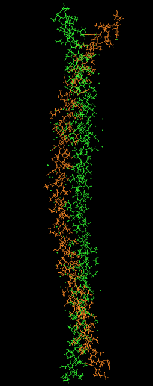

###------------------------------------------------### # COMPUTATIONAL STRUCTURAL BIOLOGY : AN INTRODUCTION # ###------------------------------------------------###
************************* * COMPUTERS FOR BIOLOGY * *************************
~ Scientists are constantly unearthing increasing amounts of biological data, leading to the problem of not only storing and sharing this data in a universally accessible manner, but also using this data in a meaningful manner
This has lead to the advent of free to use databases such as the NCBI and UNIPROT , which catalogue a litany of biological data
~ In order to solve increasingly complex biological problems, scientists and doctors make use of High Performance Computing(HPC) and hardware acceleration to expedite the process of solving, or in many cases, approximating, these biological problems
************************** * MATHEMATICS IN BIOLOGY * **************************
~ We use mathematics to make quantifiable sense of our surroundings
~ Mathematics in biology addresses a variety of problems, including biostatistics and public health, chemical bonding, diffusion in the cell, population dynamics, and predator-prey relationships
~ Some of these biological and chemical observations are stochastic, meaning that many of the variables can vary drastically, or in many cases such as the weather, be completely random